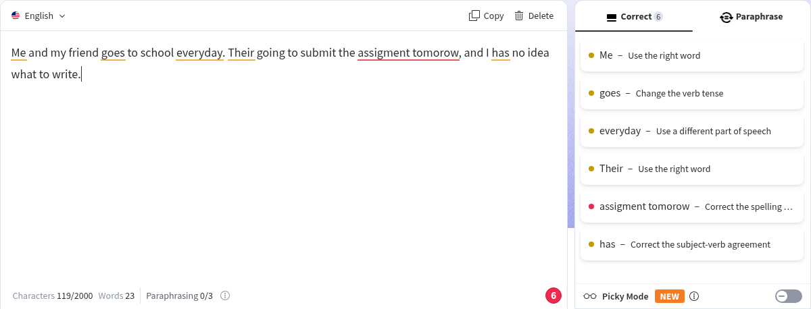
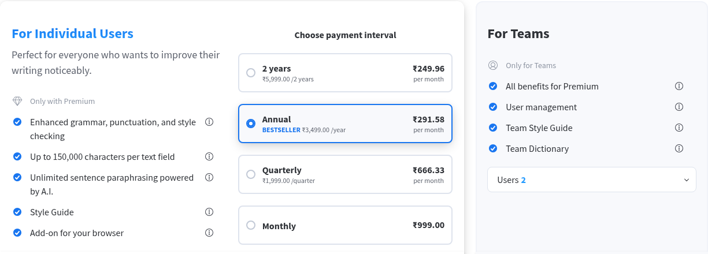

LanguageTool: a free AI grammar checker, with a 2,000-character limit
Free grammar checkers are easy to find. The question is what the free version lets you do. We typed one test sentence into LanguageTool's free web editor and read the limits on its own pages: the character cap, what Premium costs and what is no longer free.
Quick facts
- LanguageTool's website describes itself as an "AI-based grammar checker". Its free web editor at languagetool.org needs no account to check text.
- In our test the free editor showed a counter of 2,000 characters per text and 3 paraphrases ("Paraphrasing 0/3").
- Premium lifts the limit to up to 150,000 characters per text field, with unlimited paraphrasing, per its pricing page.
- The browser extension is now Premium-only, according to LanguageTool's own help centre. Free users get the web grammar checker and paraphrasing tool.
- The English variants we saw in the language list were US, British, Australian, Canadian, New Zealand and South African. There was no English (India) entry.
What it does
LanguageTool checks spelling, grammar and punctuation as you type and underlines each problem with a short reason, such as "Correct the spelling error" or "Change the verb tense". The free web editor lives at languagetool.org: paste or type text and suggestions appear in a side panel. A "Picky Mode" toggle, labelled NEW on the page, adds stricter style and punctuation suggestions. The site says LanguageTool is managed by Learneo, Inc. of California.
Our test: one sentence with deliberate errors

We typed one made-up sentence with seven deliberate mistakes: "Me and my friend goes to school everyday. Their going to submit the assigment tomorow, and I has no idea what to write." We were not signed in. The editor flagged "Me" and "Their" as wrong words, "goes" as a verb tense issue, "everyday" as needing a different part of speech, "has" as a subject-verb agreement error, and "assigment tomorow" as spelling errors, grouped as one item. That is six items in the side panel covering all seven mistakes. We did not click to accept any suggestion, and we tested English only.
What Premium costs and adds

In our test session the Premium page showed ₹999 monthly, ₹1,999 per quarter, ₹3,499 per year and ₹5,999 for two years. Premium is listed as adding enhanced grammar, punctuation and style checks, up to 150,000 characters per text field, unlimited AI paraphrasing, a Style Guide and the browser add-on. We did not subscribe, and we did not check which price an Indian buyer sees at checkout.
How to use it
- Open languagetool.org and choose the language (English, in our test).
- Paste or type your text, up to the free limit shown under the editor.
- Read each suggestion's reason in the side panel before accepting it.
- For a long document, check it in sections, or consider whether Premium's higher limit is worth it for you.
Limits and frictions
- The free editor limit we saw was 2,000 characters per text, so long documents have to be split.
- The browser extension is not free any more, per LanguageTool's help centre, so the free route is the web editor only.
- No English (India) option was in the list we saw. Indian users have to pick a variant such as British or US, and the spelling rules follow that choice.
- A grammar checker suggests; it does not know your meaning. Read each change before accepting it.
- We tested English only. The language list also showed Tamil among many others; we did not test any non-English language.
Privacy
We typed only a made-up sentence and used no account. The linked shared Learneo privacy policy covers typed Content and technical data such as IP addresses. Its LanguageTool-specific exception says inputs from Individual and Team users are not used to train its language algorithms or models by default, with no opt-out needed. That is not a promise of no processing or retention: the policy also describes support and bug review, service-improvement analytics and applied machine learning on engagement data that may include Content, and session-replay tools. Retention is decided case by case, with longer retention possible for legal and other stated purposes; we did not find a fixed deletion deadline for free-editor text in this policy. We did not audit data flows or deletion controls. Avoid pasting confidential or personal documents without checking the policy and your own obligations.
Why it matters for Indian users
Students and job seekers in India often write emails, applications and assignments in English with no second pair of eyes. A free checker that gives a short reason for each flag helps you learn the rule rather than just accept a rewrite. The trade-off is the 2,000-character free limit and no India-specific English.
Sources checked 24 October 2026: the LanguageTool homepage and editor, its Premium page, its help-centre article on the Premium-only browser extension, its shared Learneo privacy policy, linked below.